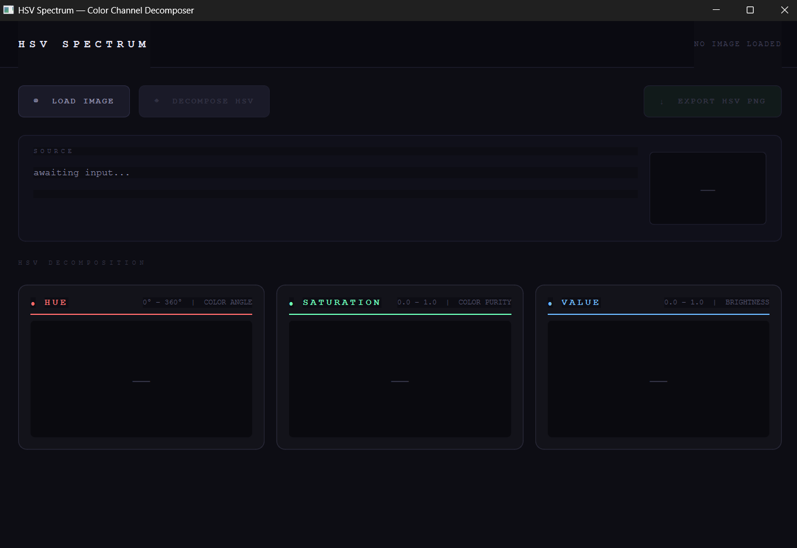

View the application GUI and decomposition examples
See how the RGB image is loaded and then transformed into separate hue, saturation, and value output panels.
Click hereHSV Spectrum imports any RGB image and visually decomposes it into three separate channels: hue, saturation, and value. The application converts color pixels to a rich HSV representation, then renders each channel as its own stylized preview so the relationships between color angle, purity, and brightness become clear.
This project was built with PyQt6, NumPy, and Pillow. The user can load an image, decompose it instantly, and export the final HSV composite as a PNG for comparison or further analysis.
Requirements: See the Run & Download page or review requirements.txt for package details.

See how the RGB image is loaded and then transformed into separate hue, saturation, and value output panels.
Click here